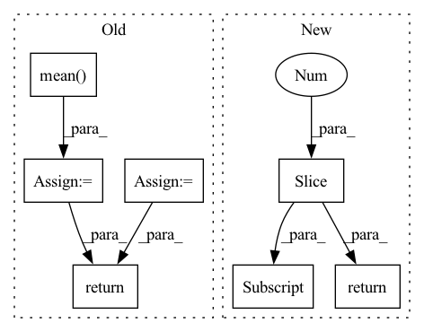

Pattern ID :14254
Before Change
inputs, input_lengths, compute_targets, compute_target_lengths
)
loss = self.cal_loss(outputs, targets, output_lengths, target_lengths)
predicts = self.forward(inputs, input_lengths)
predicts = [self.text_process.int2text(sent) for sent in predicts]
targets = [self.text_process.int2text(sent) for sent in targets]
list_wer = torch.tensor(
[self.cal_wer(i, j).item() for i, j in zip(predicts, targets)]
)
wer = torch.mean( list_wer)
if batch_idx % 100 == 0:
self.log_output(predicts[0], targets[0], wer)
self.log("val_loss", loss)
self.log("val_batch_wer", wer)
return loss, wer
def test_step(self, batch, batch_idx):
(After Change
def validation_step(self, batch: Tensor, batch_idx: int):
inputs, input_lengths, targets, target_lengths = batch
targets_ctc = targets[:, 1:-1]
outputs, output_lengths = self(inputs, input_lengths)
loss = self.criterion(
outputs.permute(1, 0, 2), targets_ctc, output_lengths, target_lengths
)
self.log("test loss", loss)
if batch_idx % self.log_idx == 0:
label_sequences, predict_sequences, wer = self.get_wer(
targets_ctc, inputs, input_lengths
)
self.log_output(predict_sequences[0], label_sequences[0], wer)
self.log("test wer", wer)
return loss
def test_step(self, batch: Tensor, batch_idx: int):
inputs, input_lengths, targets, target_lengths = batchIn pattern: SUPERPATTERN
Frequency: 4
Non-data size: 7
Instances Fragment ID: 47287365
Project Name: manhph2211/vistt
Commit Name: 742be9424d91058a3c3e25adc4db742534fffab3
Time: 2022-08-30
Author: manhph5@vingroup.net
File Name: VASR/local/src/engine/trainer.py
M Class Name: ConformerModule
N Class Name: ConformerModule
M Method Name: validation_step(3)
N Method Name: validation_step(3)
M Parent Class: BaseModel
N Parent Class: pl.LightningModule
M File Name: VASR/local/src/engine/trainer.py
N File Name: VASR/local/src/engine/trainer.py
M Start Line: 72
M End Line: 103
N Start Line: 106
N End Line: 126
Before Change
inputs, input_lengths, compute_targets, compute_target_lengths
)
loss = self.cal_loss(outputs, targets, output_lengths, target_lengths)
predicts = self.forward(inputs, input_lengths)
predicts = [self.text_process.int2text(sent) for sent in predicts]
targets = [self.text_process.int2text(sent) for sent in targets]
list_wer = torch.tensor(
[self.cal_wer(i, j).item() for i, j in zip(predicts, targets)]
)
wer = torch.mean( list_wer)
if batch_idx % 100 == 0:
self.log_output(predicts[0], targets[0], wer)
self.log("test_loss", loss)
self.log("test_batch_wer", wer)
return loss, wer
def log_output(self, predict, target, wer):
print("=" * 50)After Change
def test_step(self, batch: Tensor, batch_idx: int):
inputs, input_lengths, targets, target_lengths = batch
targets_ctc = targets[:, 1:-1]
outputs, output_lengths = self(inputs, input_lengths)
loss = self.criterion(
outputs.permute(1, 0, 2), targets_ctc, output_lengths, target_lengths
)
self.log("test loss", loss)
if batch_idx % self.log_idx == 0:
label_sequences, predict_sequences, wer = self.get_wer(
targets_ctc, inputs, input_lengths
)
self.log_output(predict_sequences[0], label_sequences[0], wer)
self.log("test wer", wer)
return loss
Fragment ID: 47287366
Project Name: manhph2211/vistt
Commit Name: 742be9424d91058a3c3e25adc4db742534fffab3
Time: 2022-08-30
Author: manhph5@vingroup.net
File Name: VASR/local/src/engine/trainer.py
M Class Name: ConformerModule
N Class Name: ConformerModule
M Method Name: test_step(3)
N Method Name: test_step(3)
M Parent Class: BaseModel
N Parent Class: pl.LightningModule
M File Name: VASR/local/src/engine/trainer.py
N File Name: VASR/local/src/engine/trainer.py
M Start Line: 105
M End Line: 136
N Start Line: 128
N End Line: 148
Before Change
self.g = nn.Parameter(torch.ones(dim))
def forward(self, x):
var = torch.var(x, dim = -1, unbiased = False, keepdim = True)
mean = torch.mean( x, dim = -1, keepdim = True)
return (x - mean) / (var + self.eps).sqrt() * self.g
// parallel with residual
// discovered by Wang et al + EleutherAI from GPT-J fameAfter Change
self.register_buffer("beta", torch.zeros(dim))
def forward(self, x):
return F.layer_norm(x, x.shape[-1:] , self.gamma, self.beta)
// parallel with residual
// discovered by Wang et al + EleutherAI from GPT-J fame Fragment ID: 47287369
Project Name: lucidrains/palm-pytorch
Commit Name: 0832087f78006c10d52c0600c7377c5929568e0b
Time: 2022-04-04
Author: lucidrains@gmail.com
File Name: palm_pytorch/palm_pytorch.py
M Class Name: LayerNorm
N Class Name: LayerNorm
M Method Name: forward(2)
N Method Name: forward(2)
M Parent Class: nn.Module
N Parent Class: nn.Module
M File Name: palm_pytorch/palm_pytorch.py
N File Name: palm_pytorch/palm_pytorch.py
M Start Line: 18
M End Line: 20
N Start Line: 19
N End Line: 19
Before Change
def forward(self, x):
eps = 1e-5 if x.dtype == torch.float32 else 1e-3
var = torch.var(x, dim = 1, unbiased = False, keepdim = True)
mean = torch.mean( x, dim = 1, keepdim = True)
return (x - mean) * var.clamp(min = eps).rsqrt() * self.g
class PreNorm(nn.Module):
def __init__(self, dim, fn):After Change
self.register_buffer("beta", torch.zeros(dim))
def forward(self, x):
return F.layer_norm(x, x.shape[-1:] , self.gamma, self.beta)
// positional embeds
Fragment ID: 47287368
Project Name: lucidrains/recurrent-interface-network-pytorch
Commit Name: 627fa4e8c36a59b89f571cdfdb478a7b72cbf855
Time: 2022-12-24
Author: lucidrains@gmail.com
File Name: rin_pytorch/rin_pytorch.py
M Class Name: LayerNorm
N Class Name: LayerNorm
M Method Name: forward(2)
N Method Name: forward(2)
M Parent Class: nn.Module
N Parent Class: nn.Module
M File Name: rin_pytorch/rin_pytorch.py
N File Name: rin_pytorch/rin_pytorch.py
M Start Line: 83
M End Line: 86
N Start Line: 77
N End Line: 77